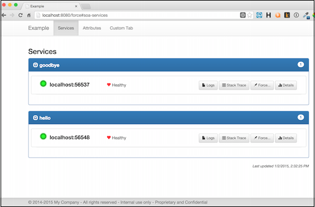

The Soabase administration console is a customizable view of your entire SOA cluster. With it you can...
The Administration Console is a standard Dropwizard application that, itself, uses Soabase. To create a console for your SOA system, start a new Dropwizard project and include a dependency for the Soabase admin console:
io.soabase:soabase-admin
Use the AdminConsoleAppBuilder to create the application instance. The main builder methods are:
| withConfigurationClass() | required - this is the class of your Configuration file. The Soabase admin console needs the same configuration that you use for your Soabase services so that it can access Discovery, Attribute, etc. config fields. |
| addingBundle() | add any additional bundles. E.g. SqlBundle and CuratorBundle |
| addingTabComponent() | adds a custom tab |
| addingMetricComponent() | adds a custom metric |
| withAuthSpec() | adds authentication (see below) |
Call build() to build a new admin console application instance. Then, use Dropwizard methods to run the application.
Build your admin console as described in the Dropwizard docs. When you run the application, you will be able to see the console from a browser. Assuming port 8080, go to http://localhost:8080.

For details on using the console, see the Admin Console Example page.
The console supports simple, LDAP or custom authentication. To enable authentication, add an AuthSpec instance to the AdminConsoleAppBuilder. Supply the AuthSpec with an AuthMethod, the set of fields (username, email, etc.) to add to the login form and, optionally, the SSL port to use for login.
Two AuthMethod implementations are provided. You can also write your own.
This auth method allows you to hard code a set of username/passwords that will be accepted for login.
You can add a custom graph for any Dropwizard metric to the admin console's details page by calling addingMetricComponent() in the app console builder passing a MetricComponent with a description of the metric:
| Field | Description |
| MetricComponent | |
| id | A unique ID for your metric |
| type | The metric type (see below) |
| name | The display name of your metric |
| label | The label for the Y axis of the graph |
| metrics | List of metrics to display in the graph (see below) |
| targetedServiceName | Optional - if specified, the custom metric only displays for the specified service |
| MetricType | |
| STANDARD | Plots the metric values unchanged |
| PERCENT | Converts the metric values to percents from double values between 0 and 1 |
| DELTA | Plots each metric value as a delta from the previous metric value |
| Metric | |
| label | The label for the X axis of the graph |
| path | Dropwizard metric to display. See below for details. |
Custom Metric Path
The custom metric path syntax can be a simple value or a predicate function:
The syntax is that of a Javascript array reference. The Soabase admin console calls eval('data.' + path) to get the value to plot. 'data' is the JSON object generated by the Dropwizard metrics servlet. E.g. gauges['system.cpu.load'].value
All of the values generated by the Dropwizard metrics servlet are applied to the given predicate function. This function should return either null or an object to graph. The predicate signature is: function(obj, name) where "obj" is the metric field and "name" is the full name. The object returned by the predicate should be: {label: 'label to display', value: value}.
The path syntax for specifying a predicate function is: "metricList(predicate)" where "predicate" is your predicate function. E.g. metricList(function(obj, name){return (name === 'foo') ? {label: 'hey', value: obj.value} : null})
A utility supplier, vmMakePrefixSuffixPredicate(), is available to search for metrics with a given prefix and suffix. Soabase uses this to display GC metrics. E.g. new Metric("GC Times", "metricList(vmMakePrefixSuffixPredicate('gauges.jvm.gc.', '.time'))").
To add a custom tab create an HTML file for your tab and, optionally, css and javascript files and any other assets. Then, call addingTabComponent() in the app console builder passing a TabComponent:
| Field | Description |
| TabComponent | |
| id | A unique ID for your tab |
| name | The display name of your tab |
| contentResourcePath | The source path for your tab's HTML file |
| javascriptUris | Relative URIs for any javascript files to reference |
| cssUris | Relative URIs for any css files to reference |
| assetsPaths | List of AssetsPaths (see below) |
| AssetsPath | |
| resourcePath | The source path |
| uriPath | The uri of the assets |
Custom tabs are bound into the admin console source. Your tab's HTML file will be merged into the admin console's HTML file. So, be aware that you are in a shared environment. Use unique IDs, class names etc.
The admin console uses Twitter Bootstrap. Your tab can take advantage of this. The following frameworks are automatically included:
The admin console includes a very simple template system. In your HTML file, you can define templates that can be used to generate content. The form for templates is:
<div class="soa-template" id="unique-template-id">
Your content goes here. Add any VARIABLE that can be substituted
later on.
</div>Then, in your javascript file, you can get the content of your template:
var template = soaGetTemplate('unique-template-id', {
'VARIABLE': substitution
});The following APIs can be used by your tab's javascript:
| getParameterByName() | Returns query parameters by name |
| soaShowInfiniteProgressBar() | Displays an "in progress" UI in the top right corner |
| soaHideInfiniteProgressBar() | Hide the "in progress" UI |
The Administration Console caches the merged HTML file at runtime. This can make developing your custom tab a pain; needing to restart the app after every change. During development, take advantage of "force mode". Instead of the normal URL, use http://localhost:8080/force. This will cause the Administration Console to rebuild the HTML file on every request.